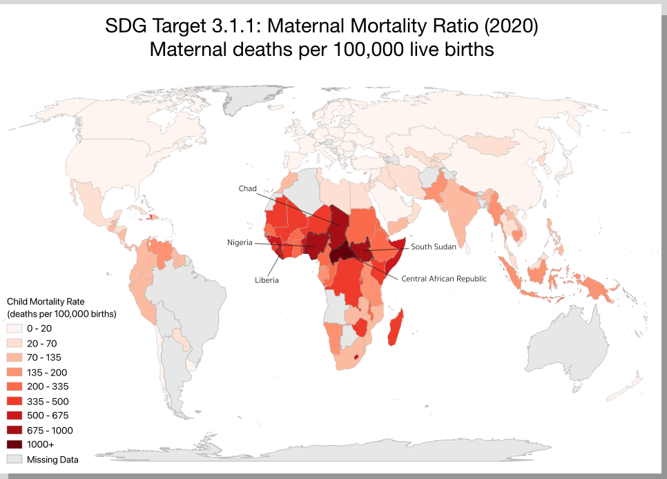

SDG Goal 3 aims to ensure healthy lives and promote well being at all ages, and the goal of this map was to visualize SDG Target 3.1. Target 3.1 calls for reducing the global maternal mortality rate to less than 70 per 100,000 live births by 2030. The specific indicator mapped here is SDG Indicator 3.1.1, with data from 2020, sourced from the UN SDG DataHub.
The maternal mortality ratio reflects the quality of a country's healthcare system, access to safe childbirth, and gender equity. The map shows stark global inequalities, with areas like Sub-Saharan Africa recording rates well above 500 deaths per 100,000 live births. Higher income countries such as those in Europe and East Asia show rates below 10. Indicator metadata is available from the UN Statistics Division.
A choropleth map is a type of map where areas like countries or regions are colored based on a data value. For this specific map, the darker the red, the higher the maternal mortality rate in that country. One of the clearest benefits of this map type is the ability to visualize spatial patterns and data quickly and efficiently. In this case the harsh contrast between Sub-Saharan Africa and the rest of the world is highlighted and therefor becomes a focus of this map. Choropleth maps are also simple for any audience to understand without a deep background in maps or a large explanation.
However, every map has its flaws and chloropleth has some noticable ones. Namely, large countries often visually dominate the map even with a smaller population. Color choice also matters a great deal, since it can shift the thresholds and make the data appear very different. Furthermore, color is able to tell a story that perhaps might be accusatory or show them in a negative/false light. Countries with missing data appear blank or grey, which can give a misleading impression of the overall image.
Before this assignment, GIS software and interactive web mapping were both very new to me, so this was a far steeper learning curve than expected. QGIS was used for the first time to join a spreadsheet of UN SDG data to a country shapefile, which required understanding how the data was structured and how tables link through shared attributes. This also meant learning the different file types GIS software uses and how much that affects their capabilities.
The basics of Leaflet, a JavaScript library for web maps, were learned alongside editing HTML and JavaScript in Sublime Text to build the interactive version. The mechanics behind Sublime and Leaflet were challenging to pick up, especially with an emphasis on coding, which made it especially rewarding once it came together.